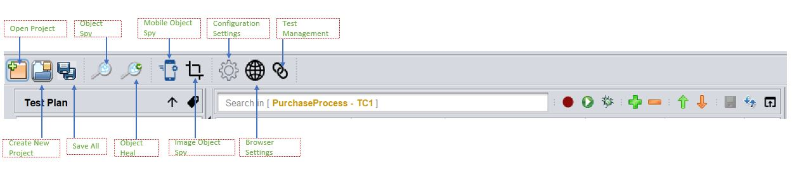
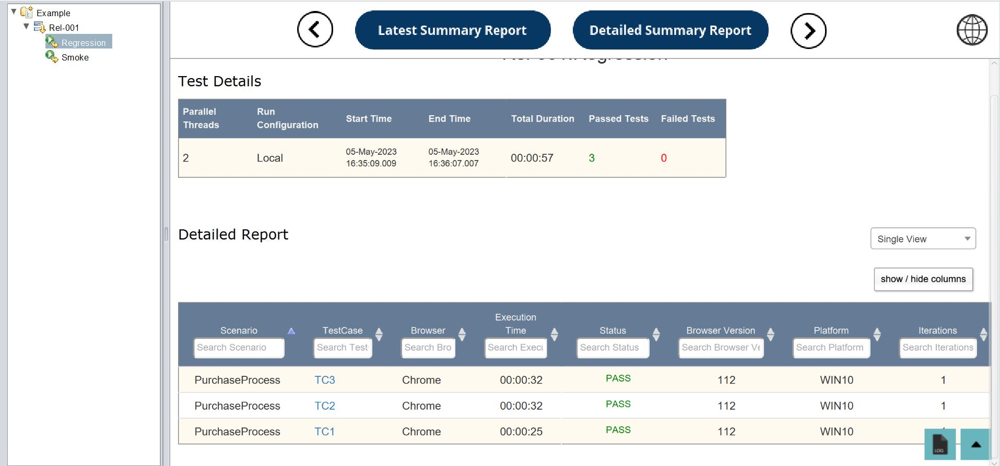

Know The Tool
Menu Ribbon
1. Tools

2. Execution

## Test Design Pane
This is where the test cases are designed and debugged. On opening the tool, the user by default lands on this pane.
The Design Pane is composed of the following 5 components :
### 1. Test Plan
This where the Test Scenarios and Test Cases are created and organized.
Every Scenario in the tool's UI , is a Directory in the backend and every Test case is a .csv file.
To see this, you can navigate to the location of your tool, then Projects >> Your Project >> Test Plan

If you select a Scenario or Test Case and Right Click, you will have some interesting and handy options to work with :

### 2. Reusable Components
This where the Reusable Test Scenarios and Test Cases (logical grouping of test steps) are created and organized. Every Scenario in the tool's UI , is a Directory in the backend and every Test case is a .csv file.
To see this, you can navigate to the location of your tool, then Projects >> Your Project >> Test Plan

What differentiates the Scenarios and Test Cases in the Test Plan compared to those in the Reusable Component is the purpose : * Test Plan is supposed contain Functional/Regression/E2E/Business Test Cases * Reusable Component is supposed contain logical test step groupings, to be used in multiple test cases in the test plan.
The tool makes use of the ReusableComponent.xml located in the Project Location, to differentiate between the above 2 type :
Here is the ReusableComponent.xml for the above example :
```xml
```
If you select a Reusable Scenario or Reusable Test Case and Right Click, you will have some interesting and handy options to work with :

### 3. Test Steps
This is the canvas where you have your test steps in sequential order

To make working simple, intuitive and easy, you can also use the drag and drop to create test steps.
In the following example, we can create the Checkout Reusable simply by dragging and dropping the objects from the Object Repository and parameterizing them by dragging and dropping the datasheet columns
 The above image is a gif. So if its not moving, please reload the page
The above image is a gif. So if its not moving, please reload the page
As a best practice, it is advisable to compose your test case only with Reusables and not have any loose (orphan) steps.
You can also drag and drop the Reusables to create test cases like this :
The above image is a gif. So if its not moving, please reload the page
4. Test Data
This is the area where you can set up your test data in multiple sheets.

Set up Multiple Environments
To set up environment based execution, you can set up mutiple environments following the 5 steps as below :

- Step 1 : From Test Data >> Make sure Multiple Environments is selected
- Step 2 : Click the [+] icon in the Data Section, to add a new Environment
- Step 3 : Enter the [Environment] Name
- Step 4 : Check [Copy Data from Other Environments]
- Step 5 : Select the Environment and the corresponding Data sheets to be copied and then click [Create] Button
If you select a data cell and Right Click, you will have some interesting and handy options to work with :

5. Object Repository
This is the area where the Web Elements/Objects are present along with the multiple attributes/properties to be used to find that element on the Application.
If any of the properties gets changed or updated in the application, the tool will try
to use the next property in the list to identify and loop through the entire list, till
it finds a unique match.

If you select a Property and Right Click, you will have some interesting and handy options to work with. These options are applicable to used for :
- Selected Object
- All objects in the Page
- All Objects in the OR

Test Execution Pane

In this pane we can club our test cases together into logical test sets or test suites and execute them - Either locally or via a CICD pipeline.

- Step 1 : Right Click on the Project Name >> Add Release >> Right Click on the Release Name >> Add TestSet
- Step 2 : Select the test cases that you want to add to the set. You can do individual selections or bulk selection by simply selecting the entire Scenario. Once selected, click on the Green <--- Arrow to pull your selections into the set.
- Step 3 : Order the Test Cases in the sequence of your choice. Choose the appropriate Browsers.
- Step 4 : Click on the gear icon and open up the Run Settings. Here you can configure many settings like :
- Parallel Thread count
- Execution Mode as Grid or Local
- Which Environment to pick for execution
Once done, we are good to start our execution by clicking on the Green Play/Run button
Dashboard Pane

In this pane we can view the detailed summary report and even access historical individual reports.
The Detailed Summary Report tab looks like this :

The Latest Summary Report tab looks like this :
